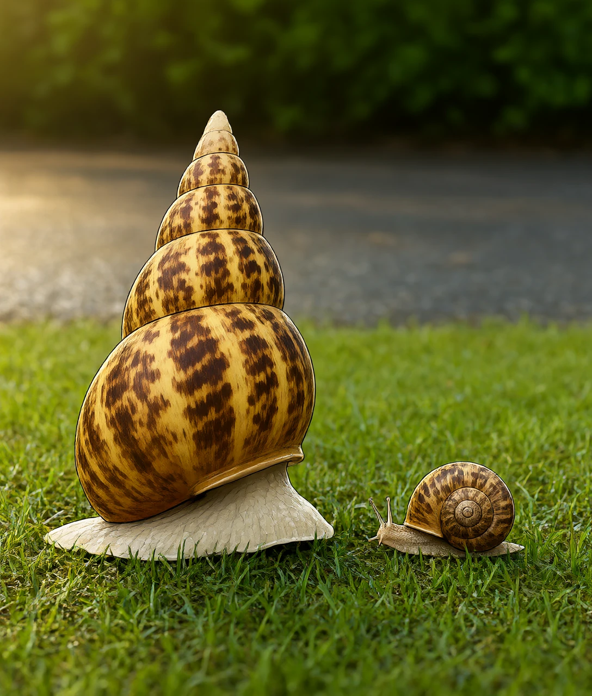
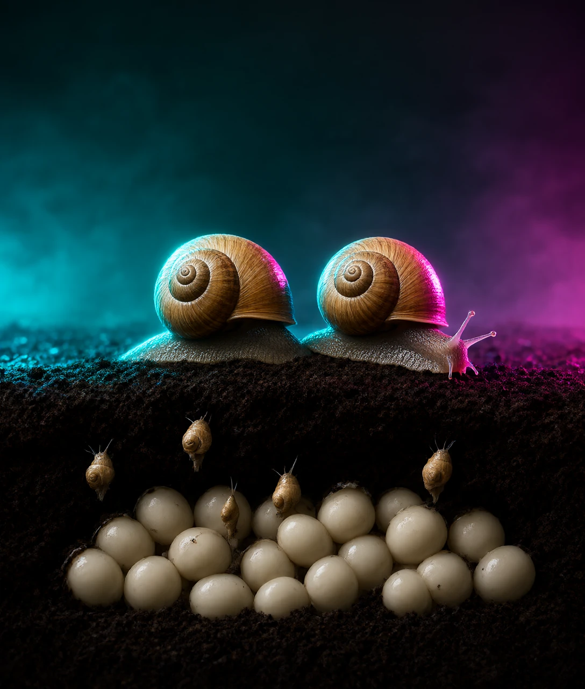
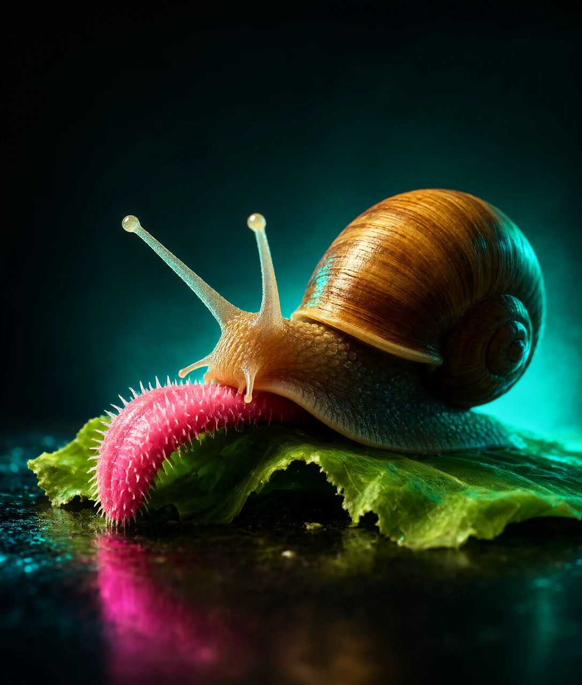
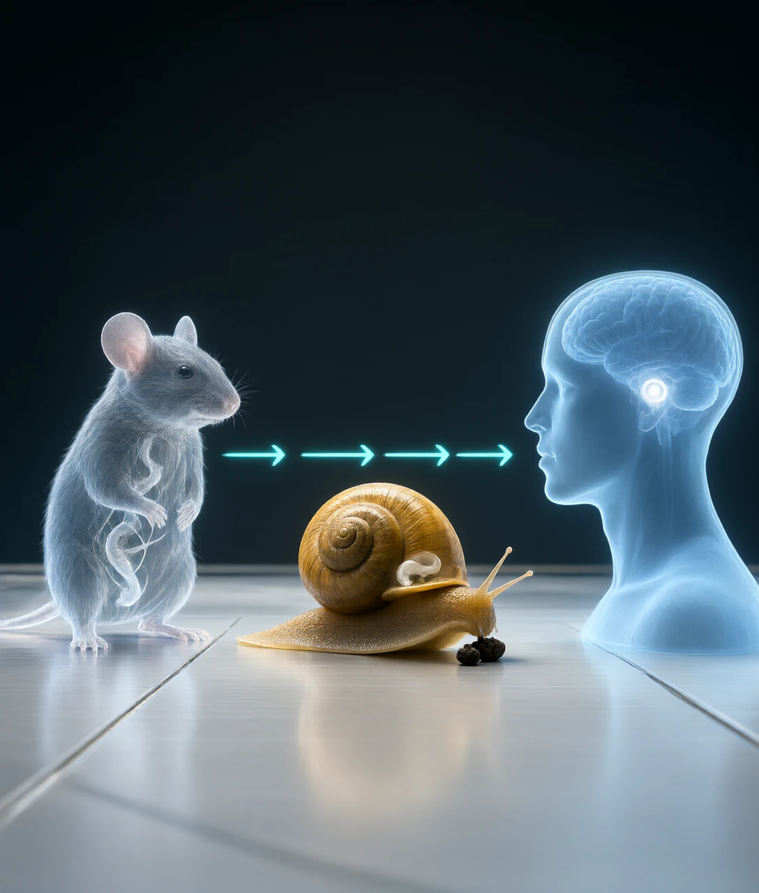
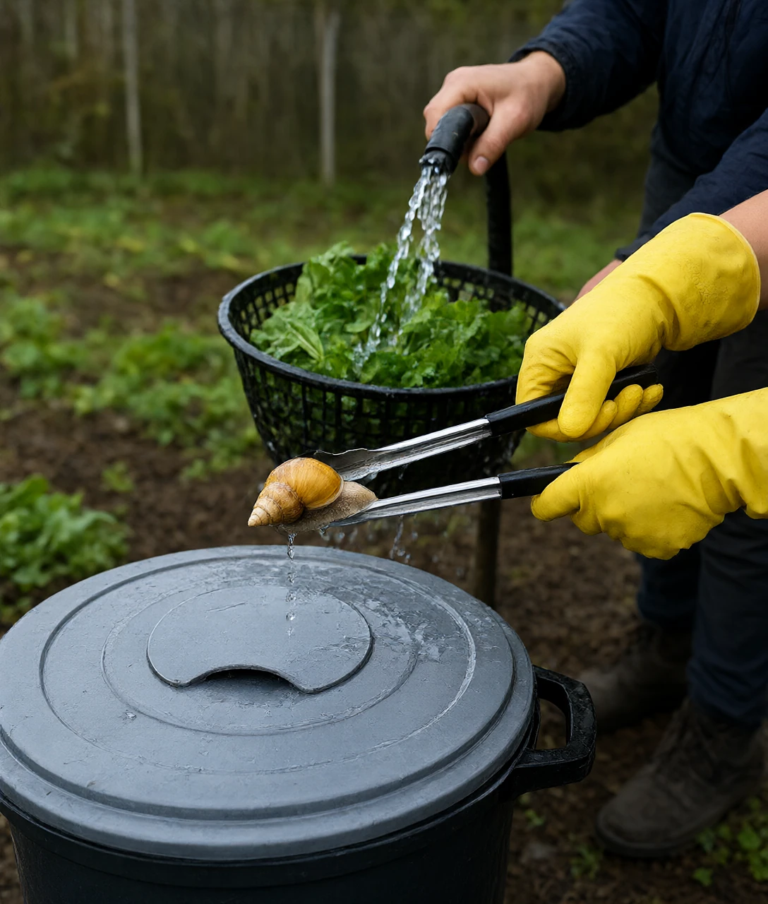

2026 年 9 月，广州绿化带出现一只壳比拳头还大的蜗牛。它不咬人，却进了重点管理名录。

2026 年 9 月，广州一处绿化带。等红灯的人拍下一只蜗牛，壳比成年人的拳头还大。视频传开后，很多人认出它是非洲大蜗牛。
它的正式名字叫褐云光滑玛瑙螺，学名 Lissachatina fulica。原产非洲东部，1931 年首次在中国大陆被记录，最先在厦门扎根。
2000 年，世界自然保护联盟把它列进世界 100 种恶性外来入侵物种。2003 年，它进入中国第一批外来入侵物种名单。2022 年，它又进了重点管理名录。
反常识的地方在这里。它不咬人，动作慢得像没睡醒。可专家的提醒只有四个字：别碰别吃。
打个比方，看着像一只没睡醒的大蜗牛，实际身份却是重点管控对象。
它凭什么泛滥起来，危害又落在哪些地方？
先看繁殖。非洲大蜗牛是雌雄同体，就是每一只都同时有雄性和雌性的生殖器官。两只碰到一起，双方都能产卵。
数量很吓人。一份调查记录，一次产卵 30 到 700 个。另一份资料说，一年产 5 到 6 次，一生能产 6000 多个卵。不同来源的数字差别不小，这只是大致范围。
卵埋在土里，1 周左右就能孵化。换算一下，十来天就多出一窝小螺。能活多久取决于环境，一般是 5 到 6 年。算下来，几只螺一个雨季就能变成一片。
为什么没人管住它？在老家东非，鸟、青蛙、甲虫都吃它。到了新地方，壳太硬，鸟类基本啃不动。天敌一少，数量就压不住。
打个比方，就像一款游戏里把所有天敌都删掉，只剩繁殖键。那下一步要问：这么多螺，吃掉了什么？

它几乎什么都吃。农作物、林木、果树、蔬菜、花卉都在菜单上。有统计说，受害植物超过 500 个品种，所以有人叫它田园杀手。
靠的是嘴里的齿舌。齿舌就是一条布满小齿的舌头，像一把锉刀。分析发现，上面的小齿约 2.5 万个。它吃东西不是咬，是来回锉。
这把锉刀能磨碎菜叶，也能啃水泥。它不是为了搞破坏，是为了补钙。壳要长硬，就得从外界弄来钙。
一晚上它能吃掉超过自身体重 3 倍的食物。换算一下，一只 900 克的螺，一夜能啃掉近 3 公斤植物。
打个比方，一队螺进菜园，像一群带着锉刀的小推土机。可它带来的麻烦，远不止吃菜这一桩。
那些更隐蔽的麻烦，又是怎么进人体的？

它不咬人。真正让人进医院的，是一种寄生虫，叫广州管圆线虫。寄生虫就是住在别的生物身上、靠对方过日子的生物。
这条线虫的一生要换宿主。成虫住在老鼠的肺里，虫卵随鼠粪排出。蜗牛吃掉带卵的粪便，就成了中间宿主，线虫在它体内长成幼虫。
人不是这条路的终点。人吃下生的螺肉，或者手碰过螺再揉眼睛，幼虫才可能进入人体。它们会往脑脊液里钻，引起持续发热和剧烈头痛，这就是嗜酸性脑膜炎。
感染有多常见？深圳疾控的提醒里给过一组数。广州、深圳等地蜗牛的带虫率是 27% 到 41%。
一只螺体内平均有 150 条以上的幼虫，相当于一个线虫小旅馆。另一份记录给出 27.3% 和 72 条，口径并不一致。
它身上还带细菌。细菌就是肉眼看不见的微小生物，绿脓杆菌、沙门氏菌、大肠杆菌都在其中。摸完不洗手，皮肤可能发痒、红肿。
打个比方，蜗牛像个搭便车的，线虫才是乘客。那是不是碰一下就会出事？

先把边界讲清。感染的前提是生食螺肉，或者伤口、黏膜接触它的黏液。远远看见、绕开走，不会出事。正常洗手，也不用恐慌。
真要处理，戴橡胶手套，用夹子夹进带盖垃圾桶。撒盐或生石灰能让它脱水。徒手抓过，要用肥皂搓洗 3 分钟以上；碰过它的果蔬，用流动水冲 5 到 10 分钟。
症状有窗口。接触后 72 小时内出现发热、头痛、呕吐，要去急诊说明接触史。早发现能靠驱虫和抗炎治疗恢复，拖久了可能伤到神经系统。
还有说不清的地方。带虫率各地差得远，学界对非洲大蜗牛和淡水螺各占多少责任仍有争议。有研究推测，云南的种群可能是从另一条贸易线进来的，这个说法还没定论。
打个比方，知道它有害只是第一步，弄清它在本地食物链里扮演什么角色，还得靠调查。可查的方向，是疾控部门历年的寄生虫监测报告。

全国调查记录显示，1931 年首次在大陆发现，最早在厦门扎根。2000 年和 2022 年是两份名录的年份。
成虫住在老鼠肺里，虫卵随鼠粪排出。蜗牛吃下虫卵，才变成中间宿主。
它用齿舌进食。那条舌头上有约 2.5 万个微小齿，像锉刀一样来回磨。
戴手套，用夹子夹进带盖垃圾桶。不抓、不踩、不吃，也不要随手丢进水沟。
不同来源给出 27% 到 41% 和 27.3% 等不同口径。学界对责任划分仍有争议。